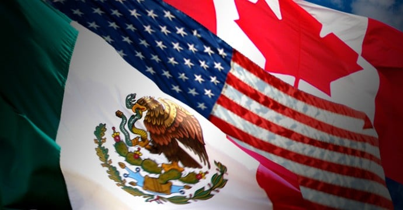

A Copa do Mundo de 2026 será histórica não apenas pelo número recorde de seleções participantes, mas também
pela grandiosidade de sua organização. Pela primeira vez, o torneio será sediado por três países diferentes:
Canadá, Estados Unidos e México. Juntos, eles formarão um palco gigantesco para receber milhões de
torcedores e proporcionar uma experiência inesquecível para atletas, visitantes e amantes do futebol de
todas as partes do mundo.
Cada país traz sua própria identidade para a competição. O México, apaixonado pelo futebol e dono de uma
rica tradição na modalidade, se tornará o primeiro país a sediar três edições da Copa do Mundo. Os Estados
Unidos oferecerão estruturas modernas, estádios impressionantes e uma capacidade única de receber grandes
eventos esportivos. Já o Canadá fará sua estreia como anfitrião do torneio masculino, mostrando ao mundo sua
hospitalidade, organização e crescente paixão pelo esporte.
Mais do que simples sedes, esses três países representam a união de culturas, povos e histórias diferentes
em torno de uma mesma paixão. As cidades anfitriãs se transformarão em verdadeiros centros de celebração,
reunindo torcedores de todos os continentes em uma festa que ultrapassa as quatro linhas do campo. A Copa de
2026 será um símbolo de integração e diversidade, provando mais uma vez que o futebol tem o poder de
conectar nações e criar momentos que permanecem para sempre na memória do mundo.